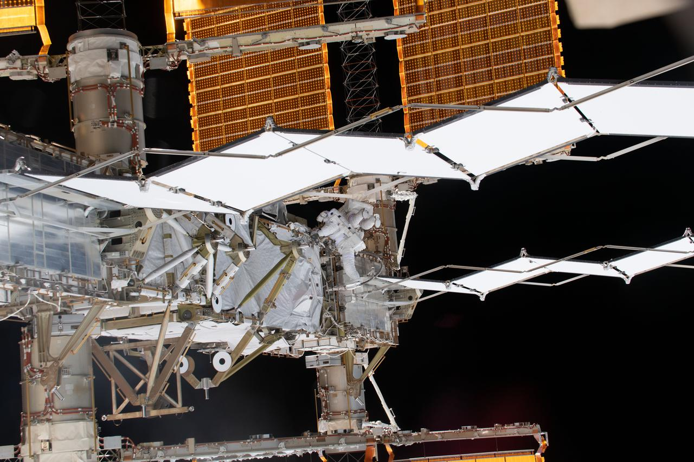
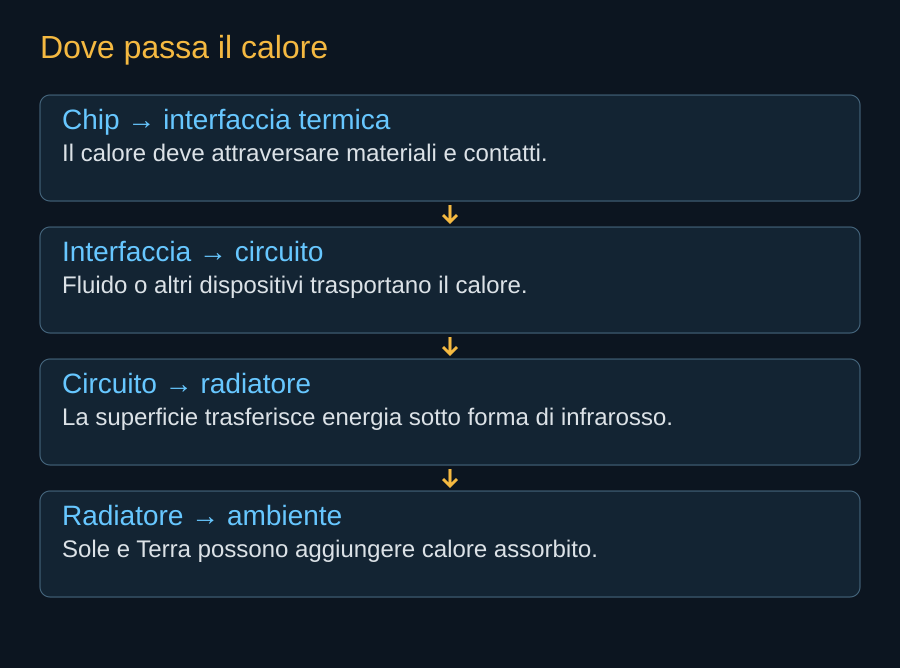

Un processore alimentato continua a produrre calore anche quando non c’è aria intorno. Nel vuoto esterno non esiste il flusso d’aria che, in un edificio, può attraversare uno scambiatore e portare energia altrove. Il satellite deve costruire un percorso dal chip a una superficie capace di emettere radiazione infrarossa. Il freddo dello spazio è una condizione favorevole del fondo, ma non un mezzo che entri spontaneamente nella macchina.


Tre modi di trasferire energia
La conduzione avviene attraverso materiali e contatti. Il trasporto attraverso un fluido può portare calore da una parte del sistema a un’altra; all’interno di circuiti chiusi esistono fluidi anche se all’esterno c’è il vuoto. L’irraggiamento permette infine all’energia di lasciare il veicolo sotto forma di radiazione. Il progetto combina questi fenomeni, invece di sceglierne uno per tutte le distanze.
Il chip può essere caldo mentre il radiatore rimane troppo freddo per lavorare bene, se il percorso intermedio ha una resistenza termica elevata. Materiali, interfacce e circolazione limitano il trasferimento. La temperatura che interessa il processore è quella della sua giunzione; la temperatura utile per calcolare l’emissione è quella della superficie radiante. Non sono necessariamente uguali.


Il computer consuma, il radiatore espelle
Quasi tutta l’energia elettrica utilizzata da processori e memoria finisce come calore all’interno del sistema. Una piccola parte può lasciare il satellite in segnali, ma non modifica l’ordine di grandezza del problema. Ai consumi del payload si aggiungono conversione, controllo, pompe se presenti e comunicazioni. I 175 kW medi dichiarati per il payload AI1 non definiscono da soli il carico termico totale del veicolo.
Per questa ragione un risparmio energetico reale nella macchina può avere un effetto doppio: riduce la superficie solare necessaria e quella destinata a espellere il calore. La prestazione per watt interessa il sistema spaziale anche attraverso massa e ingombro. Un miglioramento informatico può quindi facilitare il lancio senza cambiare il razzo.
Il radiatore assorbe anche energia
Una superficie guarda un ambiente. Può ricevere luce diretta, luce riflessa dalla Terra e radiazione infrarossa terrestre. Il bilancio netto deve sottrarre questi contributi dall’energia emessa. Un rivestimento che assorbe poco nel visibile e irradia bene nell’infrarosso può aiutare; il risultato dipende però dalla geometria e dalla stabilità delle proprietà nel tempo.
La stessa superficie può vedere parti del proprio satellite. Un pannello caldo o un elemento che ostacola la vista dello spazio modifica il bilancio. Per questo le formule semplici sono strumenti di comprensione, mentre il progetto richiede un modello con orientamenti, superfici e transitori. Una temperatura desiderata non costituisce una dimostrazione che possa essere mantenuta.
Che cosa si può risparmiare
SpaceX sostiene che il sistema possa ridurre fortemente i consumi ausiliari del raffreddamento rispetto a un impianto terrestre. La possibilità deriva dal diverso modo di smaltire energia e dall’assenza di alcuni servizi dell’edificio. Il confronto va però fatto con lo stesso perimetro: pompe, conversione e controllo non diventano gratuiti perché sono installati in orbita.
Anche il terreno offre architetture diverse, dal raffreddamento ad aria a quello a liquido con condizioni ambientali differenti. Starmind dovrà dimostrare quanto consumo ausiliario risparmia e quanto hardware aggiuntivo richiede per ottenere quel risparmio. Il calore è un problema risolvibile con ingegneria spaziale; la convenienza della soluzione resta una domanda misurabile.
Fonti pubbliche e tracce
- NASA, stato dell’arte: controllo termico. Riferimento per bilancio termico, superfici radianti e trasferimento del calore. Grafici e dimensionamenti nel libro sono esempi semplificati, non una ricostruzione del progetto SpaceX.
- NASA, radiatori microvascolari e raffreddamento attivo. Scheda di ricerca del 2016: raffreddamento mediante fluido e superfici dispiegabili; precedente tecnologico, non componente di AI1.
- SpaceX, Starmind e scheda AI1. Consultata il 10 ottobre 2026. Fonte aziendale per la scheda corrente e gli obiettivi Gigasat; non rapporto di prove in volo.
Consultare l’atlante tecnico
Caratteristiche, schemi, configurazioni e limiti: Starmind e AI1.